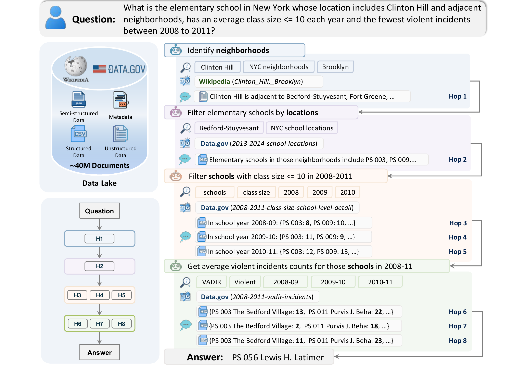
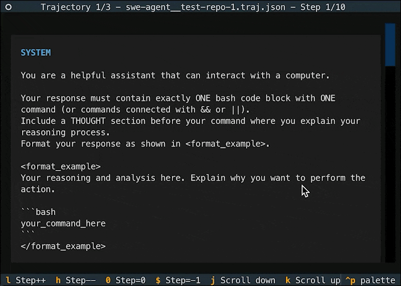

Letting an LLM loose
in a data lake
mini-swe-agent × a mini LakeQA: a frontier model vs. a small model, step by step
A question, and a lake of files nobody has read
Find
Four CTA folders with similar names: annual totals, bus routes by month, daily totals, train stations. Nothing is called bus.csv.
Understand
The data is in files/rows.txt (a CSV, despite the name), next to a 2.5 MB catalog dump. Bus rides are one column: year,bus,rail,…
Compute
Change from the year before → PIAL → lowest year in 2006–2010 → [YYYY]. The trap: 2006's change needs 2005.
Database vs. data lake, and where the agent fits in
| Database / warehouse | Data lake | |
|---|---|---|
| Think of it as | a library with a catalog | a shared drive nobody organized |
| What's in it | clean tables | raw files as-is: CSV, JSON, PDF, HTML… |
| Schema | decided before loading | worked out when you read it |
| To answer a question | write one SQL query | find the file → open it → parse it → compute |
| Example | SELECT … FROM sales | LakeQA: 40M files in an S3 bucket |
The analogy: an intern on day one
They get access to the shared drive and one question from their manager.
- Explore: browse folders for anything that says "CTA" or "bus"
- Inspect: open the file. What are the columns? What's the date format?
- Compute: write a quick script and check that the numbers look sane
- Answer: reply in exactly the format the manager asked for
A data agent is that intern, with an LLM as the brain and a terminal as the hands.
What is a data agent?
- An LLM in a loop that can act on data: list folders, open files, run code
- After every action it sees the result and decides what to do next
- It stops when it believes it has the answer
These are the four phases you'll see color-coded in every trace.
| Approach | Needs | Breaks when… |
|---|---|---|
| Text-to-SQL | one DB, known schema | the data is thousands of files |
| RAG | a search index | the answer must be computed |
| Data agent | a shell + an LLM | the LLM is weak (this project) |
What a LakeQA question looks like

- Questions over a ~40M-file lake (9.5 TB) from data.gov and Wikipedia
- Each hop = search → open a document → extract a fact that feeds the next hop
- Mixed formats: CSV, JSON, PDF, HTML, text
- 1,007 expert-checked tasks; LakeQA-mini = 135
Figure: github.com/lakeagent/datalake-qa (MIT)
Anatomy of the main task lakeqa_mini/k-1-d-1/task_3
How it's graded
- The agent must reply in the format
[Answer] - Exact match against the ground truth (70% of LakeQA answers are numbers or dates)
- The ground truth comes from the reference solution. I re-ran it on our data and got [2006]
The datasets_used field
It lists the files that contain the evidence. The agent never sees it; finding those files is the whole challenge.
Frontier models struggle, and mostly at search
Exact match on LakeQA-mini (Table 4)
Where GPT-5.2's 135 runs end (Table 6)
runs fail at search: the right dataset is never found, or found and never opened. "Search and exploration (document discovery) is the primary bottleneck; reasoning over found evidence is secondary." (Wang et al., 2026)
Numbers from the published version, arXiv:2606.10460 (Tables 4 and 6). The earlier OpenReview submission reports different figures.
LakeQA's 8 tools vs. mini-swe-agent's 1 tool
| LakeQA harness tool (evaluation/tools_schema.py) | What it does | mini-swe-agent: just bash |
|---|---|---|
| search / search_keyword | find datasets by name or tag | ls datagov | grep -i cta |
| list_files | files inside a dataset | ls datagov/<dataset>/files |
| inspect_file | header, delimiter, keys | head -n 5 …/rows.txt |
| download / get_sandbox_info | copy files into a sandbox | (already local) |
| execute_code | run Python on the files | python3 - <<'EOF' … EOF |
| submit_answer | final answer as [Answer] | echo COMPLETE_TASK_AND_SUBMIT_FINAL_OUTPUT |
Fewer tools means a simpler agent, but it puts more weight on the model knowing how to use a shell well.
An AI agent is just a loop
messages = [{"role": "user", "content": "Help me fix the ValueError in main.py"}]
while True:
lm_output = query_lm(messages)
messages.append({"role": "assistant", "content": lm_output}) # remember what the LM said
action = parse_action(lm_output) # separate the action from output
if action == "exit":
break
output = execute_action(action)
messages.append({"role": "user", "content": output}) # send command output back
Pseudocode quoted from "Building a minimal AI agent from scratch", Lieret, Jimenez, Yang & Press (minimal-agent.com)
Only three things to implement
query_lm: call any LLM APIparse_action: pull the command out of the replyexecute_action: run it, capture the output
Swap the task for "answer this question from the lake", and this loop is a data agent.
The algorithm has a name: ReAct
Reason (the THOUGHT) → Act (one command) → Observe (its output) → repeat until done. Yao et al., ICLR 2023. The model picks each next step by greedy decoding (temperature 0).
mini-swe-agent: that loop, production-ready
- ~100 lines for the agent class
- Bash is the only tool, so it works with any model
- Linear history: the trajectory is the message list
- Stateless actions: each command is a fresh
subprocess.run - >74% on SWE-bench Verified with a strong model
The scaffold is tiny, so the differences come from the model.

Official demo GIF · github.com/SWE-agent/swe-agent-media (MIT)
Every reply must follow one strict format
Valid reply
THOUGHT: Let me see which datasets exist. ```mswea_bash_command ls datagov wikipedia ```
Exactly one block, so it runs. The output comes back as the next message.
Format error
```bash ls datagov ```
Wrong fence (or 0 or 2+ blocks), so nothing runs. The agent replies "Please always provide EXACTLY ONE action in triple backticks…" Three in a row and the run is aborted.
Submitting
echo COMPLETE_TASK_AND_SUBMIT_FINAL_OUTPUT \
&& echo "[2006]"
If the output starts with the marker, the agent stops. Everything after it is the answer that gets graded.
One step of the loop
① The question goes into the message list and the LLM is queried.
② The reply is parsed: exactly one mswea_bash_command block?
③ No? A format error message is appended and we loop.
④ Yes? Run it, append the output as the next message, and loop.
⑤ When the output starts with the submit marker, stop and grade.
The model only ever sees text
```mswea_bash_command find . -iname '*cta*' -o -iname '*bus*passenger*' | head -80 ```
<returncode>0</returncode>
<output>
./datagov/cta-ridership-l-station-entries-monthly-…
./datagov/cta-ridership-daily-boarding-totals
./datagov/cta-ridership-bus-routes-monthly-…
./datagov/public-health-…-life-expectancy-… (ex-pe-CTA-ncy)
./datagov/cta-ridership-annual-boarding-totals
</output>find datagov/cta-ridership-annual-boarding-totals -maxdepth 2 -type f
What to notice
- The agent is a chat transcript. Each step adds two messages: the model's command, then the shell's output.
- The model never opens a file. It only reads what
find,headorpython3printed. - The whole transcript is re-sent on every call. That's its only memory.
Problems are just more text
<warning> The output of your last command was too long. Please try a different command… </warning>
Step 5 printed a 35 KB file of web-crawl headers. mini-swe-agent sent back this warning with only the start and end, and the model moved on to another file. A crash comes back the same way, as a traceback. The agent needs no special error handling.
How DefaultAgent really runs
Redrawn from the official diagram in mini-swe-agent.com, "Understanding the agent" (MIT) · dotted = "calls"
10 real LakeQA dataset folders, 89 files, 48 MB
needed by a demo task decoy · folders copied verbatim from s3://lakeqa-yc4103-datalake
datagov/cta-ridership-annual-boarding-totals/ ├── files/ │ ├── rows.txt ← the data (CSV!) │ ├── data.txt ← 2.5 MB catalog dump │ ├── columns.txt, w8km-9pzd.txt │ └── catalog.txt, dcat-us.txt ├── headers.txt ← WARC crawl headers ├── metadata.json └── signed-metadata.txt
Three tasks from lakeqa_mini/k-1-d-1: CTA bus (Chicago, the main task), NY Lotto, and CDC overdose deaths.
What I added around mini-swe-agent
A data-lake prompt · a fresh read-only copy of the lake per run · a guard that blocks network and destructive commands · live rendering and recording · a failure-mode grader. Agent, model and environment classes are unchanged v2.4.6.
The whole task is 3 commands, if you already know where to look
$ ls datagov | grep -i cta cta-ridership-annual-boarding-totals ← one row per year cta-ridership-bus-routes-monthly-… ← per route, per month cta-ridership-daily-boarding-totals ← per day cta-ridership-l-station-entries-monthly-… ← trains, not buses
$ head -n 3 datagov/cta-ridership-annual-…/files/rows.txt year,bus,paratransit,rail,total ← a CSV, despite .txt 1988,430089500,435400,174436000,604960900
$ python3 - <<'EOF' import pandas as pd bus = pd.read_csv("…/files/rows.txt").set_index("year")["bus"] bus = bus.loc[2005:2010] # keep 2005: 2006's change needs it pial = bus * (1 + bus.pct_change().abs()) print(pial.loc[2006:2010].idxmin()) EOF
| year | bus rides | change | PIAL |
|---|---|---|---|
| 2006 | 298.4 M | 1.6% | 303.2 M |
| 2007 | 309.3 M | 3.6% | 320.5 M |
| 2008 | 328.2 M | 6.1% | 348.3 M |
| 2009 | 318.7 M | 2.9% | 327.9 M |
| 2010 | 306.0 M | 4.0% | 318.2 M |
2006's change compares it with the 2005 row. Drop 2005 and 2006's change becomes NaN, so the lowest looks like 2010.
The agent starts knowing none of this
Which of four folders, that rows.txt is the data, the column names, and that it must keep a year the question never mentions: each fact costs it at least one step of looking. GPT-6 Luna took 9 steps.
Watch a frontier model work
Four checkpoints
Where it goes in the lake
Where it went in the lake
→ next step · ← back · A show all · click a line to open it · L latest live run
Every run is a trajectory you can replay
- The trajectory is the message list: system, question, then reply, output, reply, output…
- Saved as
runs/…/*.traj.json, mini-swe-agent's standard format - Browse it in the project's own TUI:
← → steps · H/L previous/next run · q quit

Official demo GIF · github.com/SWE-agent/swe-agent-media (MIT)
Same task, same agent, a 9B model
Four checkpoints
Where it goes in the lake
The four characteristic mistakes
Same file, one row apart
qwen3.5 9B · steps 8–10 · [2010], wrong
$ grep -E "^(2006|2007|2008|2009|2010)," rows.txt
# keeps only the years in the question: 2005 is gone
year bus_passengers pct_change PIAL
2006 298433228 NaN NaN
2007 309271311 0.036 3.205e+08
…
2010 306023976 -0.040 3.182e+08
"2006 has NaN … since there's no prior year data in our dataset"
False: 2005 was in the file. It removed it itself, then submitted without checking.
GPT-6 Luna · step 8 · [2006], correct
for y in range(2006, 2011):
p = rows[y]
change = abs(p - rows[y-1]) / rows[y-1]
print(y, p, change, p * (1 + change))
# y-1 for 2006 is 2005
2006 298433228 0.0159 303167870 ← lowest
2007 309271311 0.0363 320502996
…
2010 306023976 0.0397 318170738
Same file, same formula. It looked up the year before, even though the question never mentions 2005.
Not a one-off: all three 9B runs dropped 2005. One still answered 2006, by setting 2006's change to 0%: right answer, wrong reasoning. In failure-mode terms: a wrong assumption about the data (2006–2010 is enough) and a premature answer (it doubted the NaN and submitted anyway). In LakeQA's terms: "analyzed, but still wrong", the #1 failure for the best model in the paper (Claude Sonnet 4.5: 49 of 135).
Correct answers, by model and task
* qwen3.5 9B's one correct CTA run dropped 2005 too, and got 2006 by setting its change to 0%.
Same for every run: mini-swe-agent v2.4.6 · same prompt · temperature 0 · max 20 steps · 60 s per command · exact-match grading against LakeQA's answer
What the demo shows
The scaffold is not the bottleneck
~100 lines of loop plus bash is enough for a capable model to explore, inspect, compute and answer correctly.
Small models break the contract
They use the wrong code fence, write tool output themselves, and forget that every command runs in a fresh shell.
Search fails first, then analysis
Tiny models fail at search: invented file names, decoys. The 9B got past search and failed at analysis, like the paper's best models.
Making agents robust
Native tool calling or constrained decoding, loop detection and early stopping, metadata search tools, and checking the answer before submitting it.
Where you'll meet data agents, and how to keep one safe
You've probably used one already
- Upload a CSV to ChatGPT or Claude and ask a question: the same loop, with Python instead of bash
- "Ask your data" features in warehouses (e.g. Databricks Genie, Snowflake Cortex Analyst): the schema is known, so they sit closer to text-to-SQL
- The hard case is this one: raw files nobody documented, like logs, exports and PDFs on a shared drive
Guardrails used in this project
| Guardrail | What it prevents |
|---|---|
| Fresh read-only copy of the lake per run | the agent editing or deleting real data |
Block sudo, rm -rf /, curl, network calls | dangerous commands on my laptop |
| 20-step limit, 60 s per command | a small model looping forever |
| One strict reply format, checked by regex | ambiguous actions: they're rejected, not guessed |
| Save every trajectory | "why did it do that?" with no way to find out |
| Prompt asks to sanity-check results | NaN-style mistakes (only partly: see CTA) |
Sources and credits
Papers and code
- LakeQA: An Exploratory QA Benchmark over a Million-Scale Data Lake. Wang et al., ICML 2026. arXiv:2606.10460 · openreview.net/forum?id=gWoEOFW0CR · github.com/lakeagent/datalake-qa (MIT)
- mini-swe-agent, Princeton/Stanford SWE-bench team, v2.4.6. github.com/SWE-agent/mini-swe-agent (MIT)
- Building a minimal AI agent from scratch. Lieret, Jimenez, Yang & Press. minimal-agent.com: the agent-loop pseudocode on slide 9
- Understanding the agent, mini-swe-agent docs: the control-flow diagram on slide 14, redrawn
- ReAct: Synergizing Reasoning and Acting in Language Models. Yao et al., ICLR 2023: the reason → act → observe loop
Figures and data
- LakeQA example figure, figures/lakeqa_fig1.png (MIT)
miniand Inspector demo GIFs, SWE-agent/swe-agent-media (MIT)- LakeQA tool interface, evaluation/tools/tools_schema.py
- Dataset folders: public data.gov and Wikipedia content mirrored by the LakeQA authors
Reproduce it
./setup.sh # venv, data lake, Ollama + local models (API key goes in .env)
./demo.sh strong | qwen | small [cta|lotto|overdose] · ./demo.sh small --replay · ./demo.sh inspect